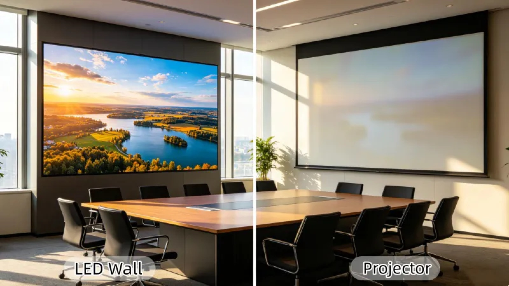
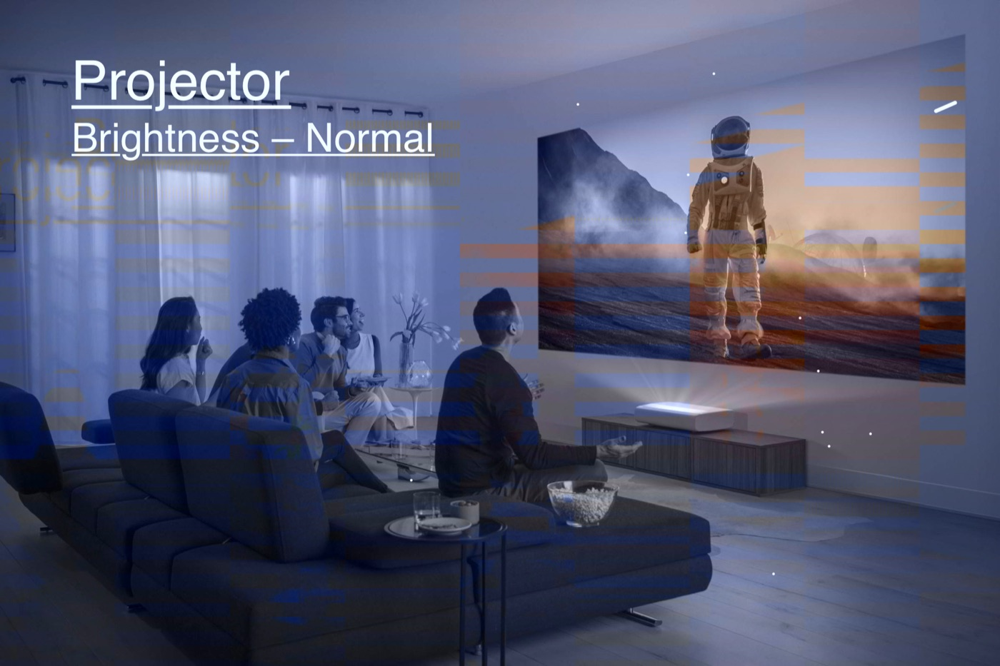
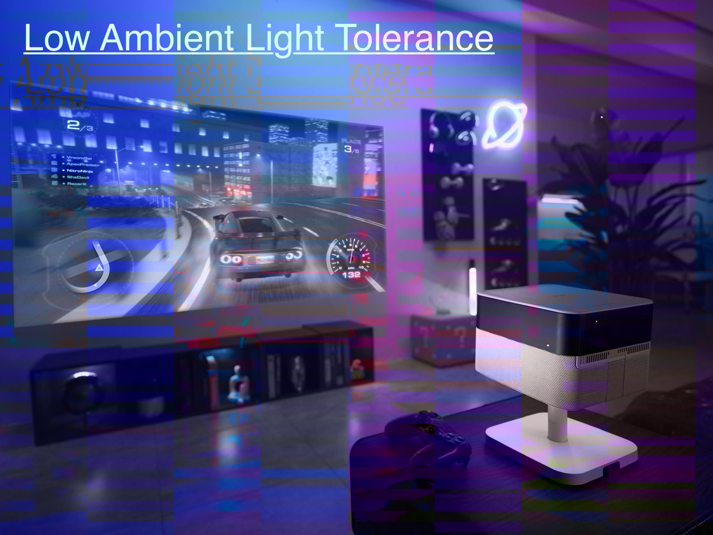
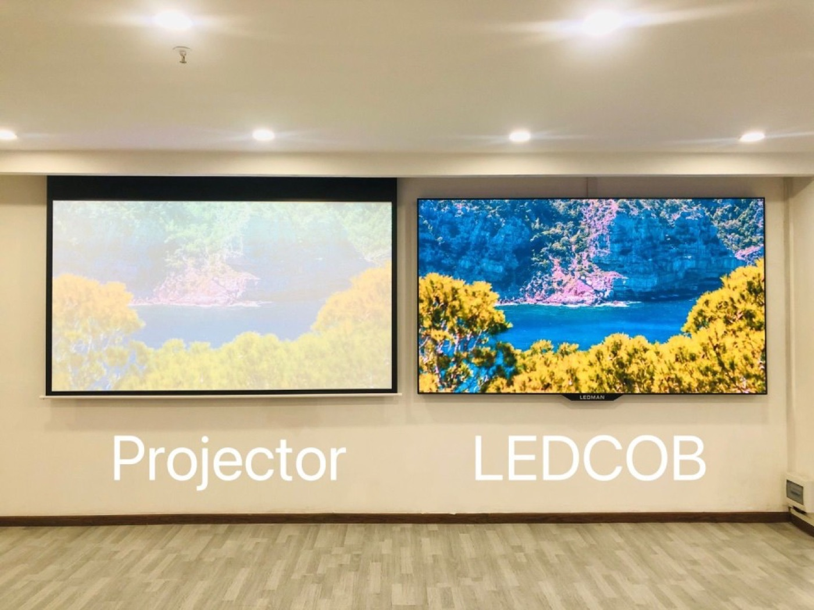

LED and projection are both used to put a large image in front of an audience, but they work in opposite ways. An LED wall is an emissive surface: every pixel produces its own light, so the image is bright, high in contrast, and largely unaffected by the light in the room. A projector is a reflective system: it throws light onto a screen, so the image competes with ambient light and depends on the surface it lands on.
Readers working from a US specification should note the terminology: what this guide calls an LED wall is normally written as dvLED (direct-view LED) in bid documents and consultant specifications. The technology and the trade-offs are the same — see what a dvLED video wall is for the definition.
That single physical difference drives almost every practical trade-off. Bright rooms favour LED. Dark rooms can suit either. Very large images viewed from a distance often favour projection on cost. Events where viewers stand close, in bright light, or at wide angles favour LED.
The comparison also depends on what the screen is for. A cinema image is watched in darkness from a fixed direction, which plays to projection's strengths. A stage backdrop is watched from every angle, often under bright stage light, with cameras recording it, which plays to LED's strengths.
Installation logistics differ just as much. An LED wall arrives as a set of cabinets that are physically built on a frame, so it needs structure, rigging points, and power distributed across the surface. A projector is a single box that needs a mounting position, a clear throw path, and a screen, which is often simpler to install but harder to place well in a busy room.
This guide compares the two formats across brightness, contrast, viewing angles, geometry, maintenance, and lifetime cost, so a buyer can match the technology to the room rather than to a personal preference.
One more distinction frames the whole comparison: how each format behaves when the content changes quickly. An emissive wall is essentially a very large monitor, so it absorbs live video, sports, and reactive content without a projector's fan noise or beam path intruding on the room. The question is therefore not only about brightness but about whether the space is designed around a bright, always-on image or around a darkened, directional viewing experience.
Brightness is usually the tiebreaker. An LED wall holds its image in a lit room because its pixels emit light directly; a projector's image washes out as ambient light rises, because the projector has to overcome light that already falls on the screen. In a bright lobby, a sunlit atrium, or a stage under full lighting, LED reads clearly where projection struggles.
Contrast is the second factor, and it interacts with brightness. LED can switch pixels almost completely off, which produces deep blacks and high contrast, especially in COB designs that reach ratios around 10000 to 1. Projection produces black only where no light reaches the screen, so a little spill light from the room lifts the blacks and flattens the image.
Colour volume follows the same logic. An emissive wall maintains saturated colour at high brightness, while a projected image tends to desaturate as it is pushed brighter. For brand colours and product shots that must look accurate on camera, this difference is often decisive.
None of this makes projection weak; it makes it situational. In a darkened auditorium the two formats can look comparable, and projection may reach a given image size at lower cost. The mistake is to specify by habit rather than by measuring the light in the actual room.
| Factor | LED Display | Projection | Edge |
|---|---|---|---|
| Brightness in lit rooms | Self-emissive pixels | Washes out with ambient light | LED |
| Contrast | Very high, up to 10000 to 1 | Limited by spill light | LED |
| Image in darkness | Excellent | Excellent | Tie |
| Viewing angle | Wide and even | Narrower sweet spot | LED |
| Seams or bezels | None on fine pitch | None, may need blending | Tie |
| Cost at very large size | Scales with area | Lower per square metre | Projection |

Viewing angle is where LED pulls ahead for live venues. An LED wall looks the same from the front row to the side aisle, which matters when an audience surrounds a stage or when a screen sits high above a crowd. A projected image dims and distorts as the viewer moves off the projector's axis, so it is best viewed from a defined zone.
Seams are no longer a real disadvantage for LED. Fine-pitch panels such as the CV-PRO and X series butt together with virtually invisible joins, so a large wall reads as one continuous image. Projection, by contrast, may need edge blending when two projectors cover one surface, and blending zones demand careful alignment and ongoing maintenance.
Geometry favours each format differently. Projection can throw an image onto a curved or unusual surface cheaply, which suits immersive rooms and irregular architecture. LED can also curve, using flexible or angled cabinets, but a bespoke curved LED wall is a more substantial engineering project than aiming a projector at a shaped screen.
For content captured on camera, LED has an additional advantage: refresh rates of 3840 Hz and above keep the wall free of flicker and scan lines on video, while a projected image can band or strobe depending on the camera shutter. Studios and broadcast stages have largely standardised on LED for this reason.
One further geometry point is the shadow problem. A projector's throw path can be blocked by a presenter walking in front of the beam, which throws a silhouette across the image, and the projector fan is often audible near the audience. An emissive wall casts no shadows and runs silent, which matters in conference and worship settings where the speaker stands between the screen and the seats.
| Use Case | Better Choice | Reason |
|---|---|---|
| Bright lobby or atrium | LED | Ambient light defeats projection |
| Dark cinema or screening room | Projection | Lower cost at large size in darkness |
| Stage backdrop under lights | LED | Brightness and camera performance |
| Immersive curved room | Depends on design | Projection cheaper; LED more uniform |
| Broadcast and studio | LED | Flicker-free high refresh rate |
| Rented touring show | LED | Portable panels and fast build |

Lifetime cost separates the formats over the years. A projector lamp or laser source has a finite life, and even laser units lose brightness gradually, so a projection system carries a replacement and recalibration cycle. An LED wall is rated to around 100000 hours and, because it is made of many identical modules, a failure affects one small area that can be swapped in minutes.
Maintenance logistics differ as well. An LED wall can be serviced module by module, and front-serviceable cabinets let a technician work from the audience side without dismantling the rig. A projector needs dust filters, lamp or laser service, and periodic alignment, and any interruption means the whole image disappears rather than a single tile.
Power and cooling also enter the lifetime cost. LED walls consume power in proportion to brightness and content, and they generate heat that must be managed in enclosed spaces. Projectors concentrate heat in one chassis, which needs its own cooling and often a dedicated plant room or a fan noisy enough to be audible near the audience.
The practical conclusion is to budget for total cost over the intended life, not for the purchase price alone. A projection system can be cheaper to install and more expensive to run and maintain, while an LED wall costs more up front and less over a long service life. The room, the duty cycle, and the expected lifespan decide which curve wins.
A fair comparison also has to look beyond the two devices themselves. Projection depends on a screen, a mounting position, and a darkened room, so its true cost includes the surface, the alignment, and the lighting control that keeps the image readable. LED depends on structure, power distribution, and a control system, so its true cost includes the frame, the cabling, and the signal path. Budgeting the whole project rather than the box is the only way to compare the two formats honestly.

Asia Vision Technology supplies the LED walls that venues choose when the room is bright, the audience surrounds the screen, or cameras are rolling. The CV-PRO COB series reaches contrast ratios around 10000 to 1 with indoor brightness from 800 to 2500 nits, and refresh rates of 3840 Hz and above keep the image clean on video.
Displays carry CE, FCC, and RoHS certification for export markets, ship in 15 to 20 working days, and are backed by a 3-year standard warranty with panels rated for around 100000 hours. We help project teams compare pitch, brightness, and geometry against the actual room, so the specification matches the viewing conditions rather than a default assumption.
For this requirement our range covers it directly: the COB Z rental series (7680Hz flip-chip) and the COB ZH touring series (sealed, wind-rated).